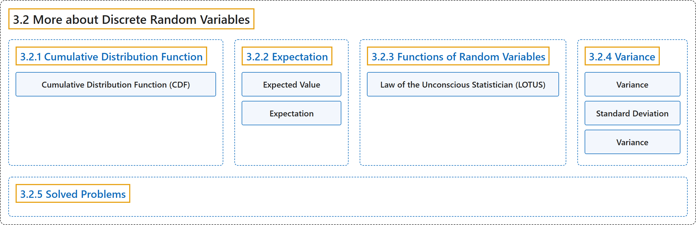

3.2 More about Discrete Random Variables
Classification

Glossary
| Term | Definition | 中文翻译 | Source |
|---|---|---|---|
| 3.2 More about Discrete Random Variables 离散随机变量（续） |
(No definition) | （无定义） | Pishro-Nik, 2014, section 3.2 |
| 3.2.1 Cumulative Distribution Function 累积分布函数 |
(No definition) | （无定义） | Pishro-Nik, 2014, section 3.2.1 |
| Cumulative Distribution Function (CDF) 累积分布函数（CDF） |
"The cumulative distribution function (CDF) of random variable \(X\) is defined as \(F_X(x) = P(X \leq x), \textrm{ for all }x \in \mathbb{R}.\)" | 随机变量 \(X\) 的累积分布函数（CDF）定义为 \(F_X(x) = P(X \leq x), \textrm{ for all }x \in \mathbb{R}.\) | Pishro-Nik, 2014, section 3.2.1 |
| 3.2.2 Expectation 期望 |
(No definition) | （无定义） | Pishro-Nik, 2014, section 3.2.2 |
| Expected Value 期望值（数学期望） |
"The expected value of \(X\), denoted by \(EX\) is defined as \(EX=\sum_{x_k \in R_X} x_k P(X=x_k)=\sum_{x_k \in R_X} x_k P_X(x_k).\)" | \(X\) 的期望值记作 \(EX\)，定义为 \(EX=\sum_{x_k \in R_X} x_k P(X=x_k)=\sum_{x_k \in R_X} x_k P_X(x_k).\) | Pishro-Nik, 2014, section 3.2.2 |
| Expectation 期望 |
"The expectation value, also called the expected value, mathematical expectation, or mean, of a random variable is its probability-weighted average." | 随机变量的期望值（也称为期望、数学期望或均值）是它的按概率加权的平均值。 | Weisstein, n.d.-b, "Expectation value" entry, para. 1 |
| 3.2.3 Functions of Random Variables 随机变量的函数 |
(No definition) | （无定义） | Pishro-Nik, 2014, section 3.2.3 |
| Law of the Unconscious Statistician (LOTUS) 无意识统计学家法则（LOTUS） |
"But there is another way which is usually easier. It is called the law of the unconscious statistician (LOTUS)." | 但还有另一种通常更简便的方法，称为无意识统计学家法则（LOTUS）。 | Pishro-Nik, 2014, section 3.2.3 |
| 3.2.4 Variance 方差 |
(No definition) | （无定义） | Pishro-Nik, 2014, section 3.2.4 |
| Variance 方差 |
"The variance of a random variable \(X\), with mean \(EX=\mu_X\), is defined as \(\textrm{Var}(X)=E\big[ (X-\mu_X)^2\big].\)" | 均值为 \(EX=\mu_X\) 的随机变量 \(X\) 的方差定义为 \(\textrm{Var}(X)=E\big[ (X-\mu_X)^2\big].\) | Pishro-Nik, 2014, section 3.2.4 |
| Standard Deviation 标准差 |
"To solve this issue, we define another measure, called the standard deviation, usually shown as \(\sigma_X\), which is simply the square root of variance." | 为解决这一问题，我们定义另一个度量，称为标准差，通常记作 \(\sigma_X\)，它就是方差的平方根。 | Pishro-Nik, 2014, section 3.2.4 |
| Variance 方差 |
"For a single variate X having a distribution P(x) with known population mean μ, the population variance var(X), commonly also written σ2, is defined as σ2 = ⟨(X − μ)2⟩." | 对于一个分布为 P(x)、总体均值 μ 已知的单个变量 X，其总体方差 var(X)（通常也写作 σ2）定义为 σ2 = ⟨(X − μ)2⟩。 | Weisstein, n.d.-d, "Variance" entry, para. 1 |
| 3.2.5 Solved Problems 例题详解 |
(No definition) | （无定义） | Pishro-Nik, 2014, section 3.2.5 |
References
Pishro-Nik, H. (2014). Introduction to probability, statistics, and random processes. Kappa Research. Retrieved October 28, 2026, from https://www.probabilitycourse.com/
Weisstein, E. W. (n.d.-b). Expectation value. MathWorld: A Wolfram Resource. Retrieved October 27, 2026, from https://mathworld.wolfram.com/ExpectationValue.html
Weisstein, E. W. (n.d.-d). Variance. MathWorld: A Wolfram Resource. Retrieved October 27, 2026, from https://mathworld.wolfram.com/Variance.html